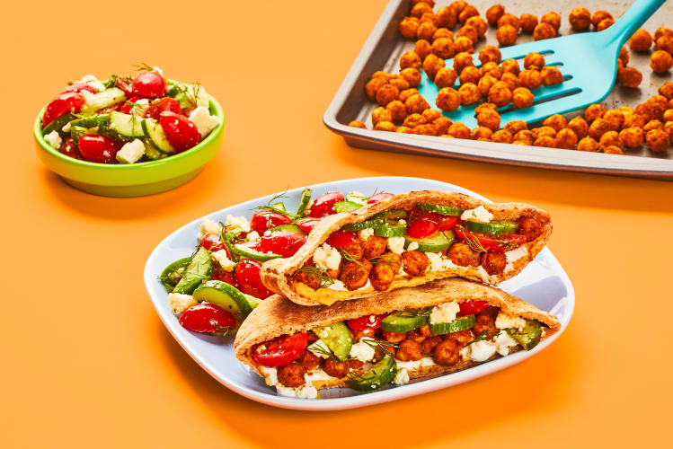

Sheet Pan Chickpea Shawarma Pita Pockets

Description
Pitas are the ultimate blank culinary canvas—their hollow pockets
can hold a world of filling possibilities! Luckily, our chefs are
pita Picassos. These pitas are bursting with crunchy,
shawarma-spiced chickpeas, hummus, tangy sour cream, and a tomato
and cucumber salad studded with fresh dill and feta cheese. The
best part? They come together in just 20 minutes! Have fun creating
your own masterpiece.
- 4 ounce Grape Tomatoes
- 1/2 cup Feta Cheese (Contains Milk)
- 1 unit Persian Cucumber
- 1 tablespoon Shawarma Spice Blend
- 6 tablespoon Southwest Sour Cream (Contains Milk)
- 1/4 ounce Dill
- 4 tablespoon Hummus
- 13.4 ounce Chickpeas
- 2 unit Whole Wheat Pitas (ContainsWheat)
- 1 teaspoon Cooking Oil
- 1 teaspoon Olive Oil
- Salt
- Pepper
- Adjust rack to top position and preheat oven to 425 degrees.
Drain and rinse chickpeas; dry thoroughly with paper towels.
Toss on a baking sheet with a drizzle of oil, Shawarma Spice,
salt, and pepper. • Roast on top rack until browned and
crisp, 18-20 minutes. TIP: It's natural for chickpeas to
pop a bit while roasting.
- While chickpeas roast, wash and dry all produce. Halve tomatoes.
Trim and halve cucumber lengthwise; thinly slice
crosswise into half-moons. Pick and roughly chop fronds from dill.
- In a large bowl, toss together tomatoes, cucumber, chopped
dill, feta, and a drizzle of olive oil. Season with salt and
pepper. • Toast pitas until warm and pliable. Halve each pita
crosswise to create pockets.
- Spread hummus and sour cream inside of each pita pocket.
Fill with as many chickpeas as you like (you may have some
left over) and a small amount of salad. • Divide stuffed pita
pockets between plates. Serve with remaining salad on the
side. TIP: Sprinkle your salad with any remaining chickpeas
for a crunchy, crouton like topper!